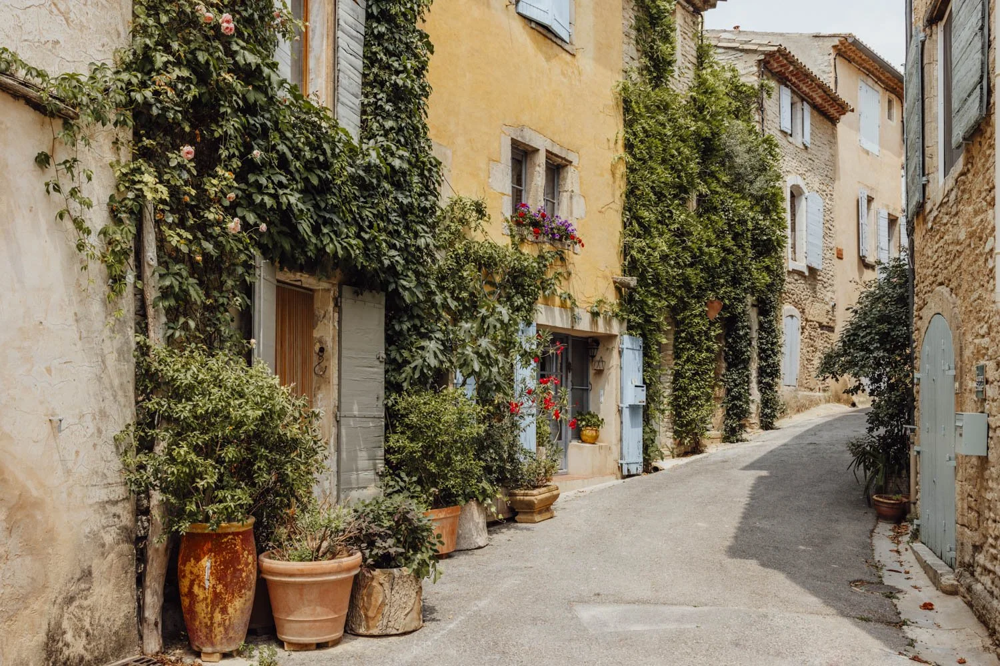
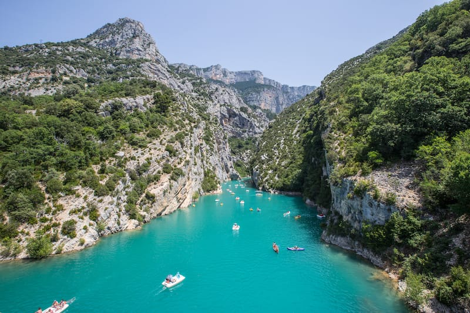
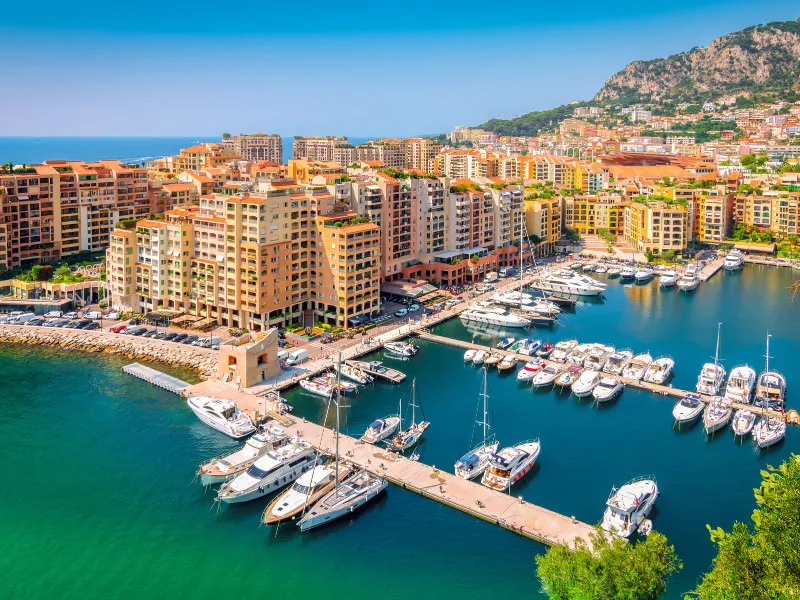
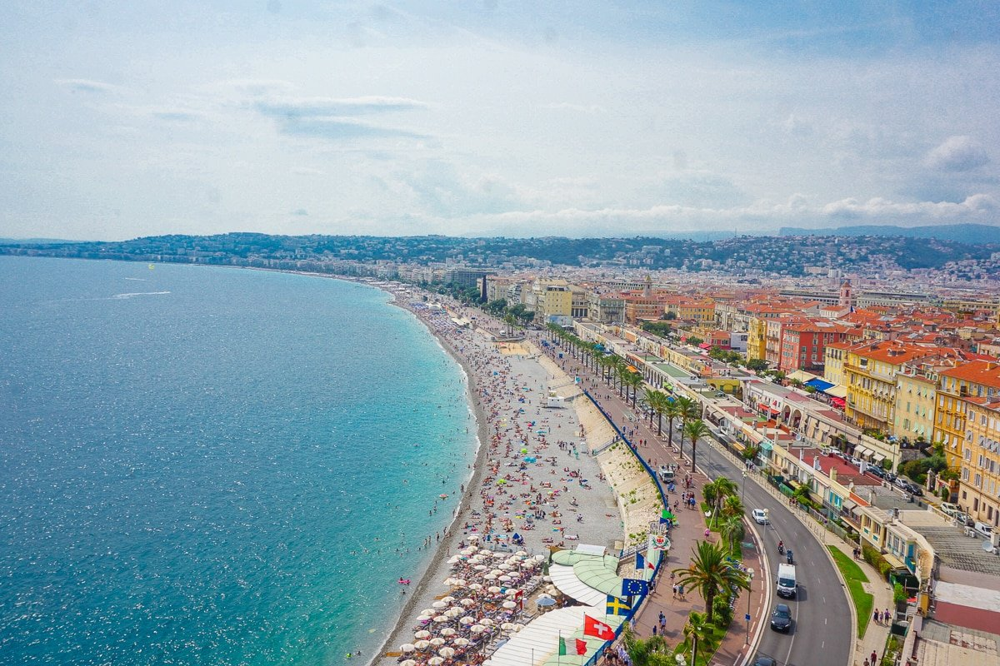

The South of France, or the Côte d'Azur, is a sun-drenched paradise where Mediterranean waters meet golden beaches and picturesque hilltop villages.
Known for its vibrant culture, this region offers everything from glamorous resorts like Nice and Cannes to charming towns like St-Paul-de-Vence and Grasse.
The South of France boasts some of the world’s finest cuisine, with fresh seafood, regional wines, and decadent pastries that will delight your senses. Experience the luxury and elegance of Monaco, where opulent casinos, yachts, and Michelin-starred restaurants await.
Whether you're strolling through lavender fields in Provence, exploring Roman ruins in Nîmes, or cruising the French Riviera, adventure awaits at every turn
The South of France is a haven for art lovers, home to legendary museums and galleries, including the Fondation Maeght and the Picasso Museum in Antibes.
The iconic city of Nice is famous for its stunning Promenade des Anglais, where visitors can enjoy the sea breeze and a leisurely walk along the coast. The hills of the Luberon are dotted with vineyards, olive groves, and idyllic villages, offering a taste of rural life in one of France's most beautiful regions.
With its mild Mediterranean climate, rich history, and breathtaking landscapes, the South of France is the ultimate destination for a relaxing, yet unforgettable getaway.
From the dramatic cliffs of the Calanques National Park to the colorful markets of Aix-en-Provence, the South of France offers endless opportunities for exploration and discovery.The South of France has Something for Everyone!
   With its mild Mediterranean climate, rich history, and breathtaking landscapes, the South of France is the ultimate destination for a relaxing, yet unforgettable getaway. Click Here to Read About Some of the Endless Opportunities!
Click Here to Go to Page 2